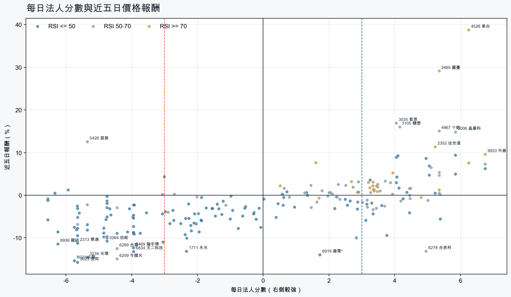
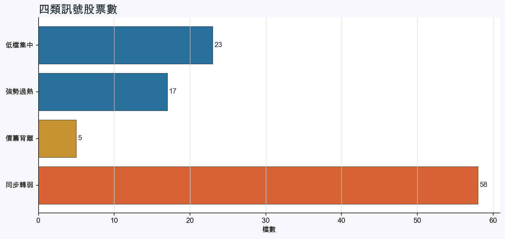
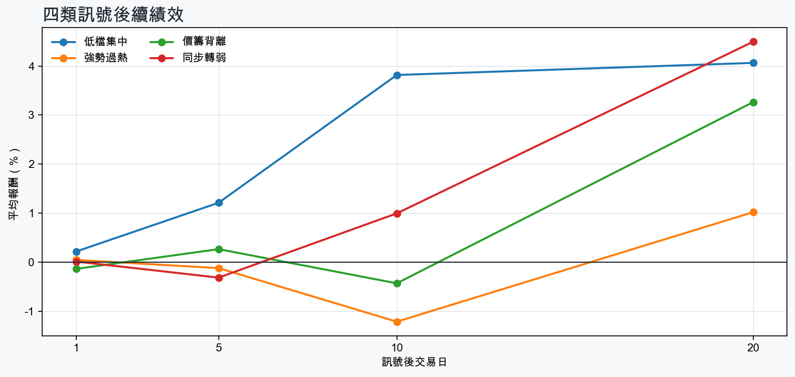

市場情緒偏空
近5日法人合計-4,129,989 張
篩選池上漲比例33.6%
籌碼好 / RSI低15 檔
籌碼差 / 價跌15 檔



EPS × PE VALUATION
法人常用的相對估值
顯示保守、基準與樂觀估值帶，不把單一數字包裝成精準目標價。
最新累計 EPS 依季數年化 × 同產業有效 P/E 的 Q25／中位數／Q75。排除本公司、非正 P/E，並以 1.5×IQR 排除離群值。估值帶是公開資料篩選值，不是法人目標價；未使用分析師預估 EPS。
MOOD × MONEY
情緒與籌碼雷達
熱度代表被討論程度；情緒分與法人方向分開計算。熱門不等於適合追價，樣本不足也不硬判多空。
| 股票 | 情緒 | 討論熱度 | 情緒 × 籌碼 | 情緒 × 基本面 |
|---|---|---|---|---|
| 2409 友達同步轉弱 | 偏多 +33.2信心 100 | 1003 篇 / 374 留言 / 3 則新聞 | 熱門但法人撤退法人分 -4.1 | 基本面與情緒分歧基本面分 -0.6 |
| 2303 聯電同步轉弱 | 中性分歧 -13.4信心 100 | 852 篇 / 146 留言 / 3 則新聞 | 高熱分歧法人分 -4.8 | 基本面與情緒分歧基本面分 +2.0 |
| 2603 長榮強勢過熱 | 偏多 +32.6信心 90 | 821 篇 / 123 留言 / 3 則新聞 | 情籌共振法人分 +3.4 | 基本面與情緒共振基本面分 +2.0 |
| 2492 華新科低檔集中 | 情緒高漲 +59.6信心 72 | 651 篇 / 34 留言 / 3 則新聞 | 情籌共振法人分 +4.1 | 基本面與情緒共振基本面分 +2.0 |
| 3260 威剛低檔集中 | 情緒高漲 +67.6信心 68 | 621 篇 / 25 留言 / 3 則新聞 | 情籌共振法人分 +4.0 | 基本面與情緒共振基本面分 +3.6 |
| 6269 台郡同步轉弱 | 中性分歧 -12.3信心 38 | 541 篇 / 16 留言 / 1 則新聞 | 情籌混合法人分 -4.5 | 基本面與情緒分歧基本面分 +0.1 |
| 2313 華通同步轉弱 | 中性分歧 +0.0信心 30 | 380 篇 / 0 留言 / 3 則新聞 | 情籌混合法人分 -5.7 | 基本面與情緒分歧基本面分 +2.0 |
| 4526 東台強勢過熱 | 偏多 +29.7信心 30 | 380 篇 / 0 留言 / 3 則新聞 | 情籌共振法人分 +6.2 | 基本面與情緒共振基本面分 +2.0 |
| 2352 佳世達強勢過熱 | 偏多 +29.7信心 30 | 380 篇 / 0 留言 / 3 則新聞 | 情籌共振法人分 +5.2 | 基本面與情緒分歧基本面分 +0.8 |
| 2412 中華電強勢過熱 | 中性分歧 +0.0信心 30 | 380 篇 / 0 留言 / 3 則新聞 | 情籌混合法人分 +3.5 | 基本面與情緒分歧基本面分 +2.0 |
| 1101 台泥強勢過熱 | 中性分歧 +0.0信心 30 | 380 篇 / 0 留言 / 3 則新聞 | 情籌混合法人分 +3.9 | 基本面與情緒分歧基本面分 +0.8 |
| 2049 上銀低檔集中 | 偏多 +29.7信心 30 | 380 篇 / 0 留言 / 3 則新聞 | 情籌共振法人分 +5.8 | 基本面與情緒共振基本面分 +2.0 |
01
籌碼好 / RSI低
優先研究基本面；法人續買且價格止穩時，才適合分批觀察。
| 股票 / 確認狀態 | 每日法人分 | 浦男式近似 | 法人加速度 | RSI / 相對強弱 | 量價確認 | 融資融券 | 每週集保確認 | 基本面 | EPS × 同業 P/E 估值 | 情緒 / 情籌 | 近期消息 | 論壇討論 |
|---|---|---|---|---|---|---|---|---|---|---|---|---|
| 4927 泰鼎-KY可研究 · 100 分籌碼與價格確認，可列研究清單 | +4.5法人 +4,329 張 / 3 天 | 命中 · 96站上月線；中期均線偏多；法人籌碼偏多 | +1,795 張近3日 +1,229 / 連續 -1 日 | 49.1相對大盤 +26.9% | 量比 0.95確認分 +6.5價格、量能與籌碼未見明顯弱項 | -%融資 - 張 / 融券 - 張 | +8.98 pp1000張 +10.48 pp | 單月營收年增 +72.8%；累計營收年增 +9.7%仍需觀察下一期財報延續性來源：公開資訊觀測站 | 不適用最新財報缺少可年化 EPS | 樣本不足 +0.0熱度 23 / 信心 10情緒樣本不足 | 【11:11 即時新聞】泰鼎-KY(4927) 盤中走強靠近前高，市場聚焦營收動能CMoney投資網誌 · 10/28 | 近期沒有明確提及本股的論壇樣本 |
| 2492 華新科可研究 · 100 分籌碼與價格確認，可列研究清單 | +4.1法人 +3,653 張 / 4 天 | 命中 · 100站上月線；中期均線偏多；法人籌碼偏多 | +14,642 張近3日 +8,249 / 連續 +3 日 | 49.1相對大盤 +43.5% | 量比 1.63確認分 +6.5價格、量能與籌碼未見明顯弱項 | -%融資 - 張 / 融券 - 張 | +4.14 pp1000張 +4.55 pp | 單月營收年增 +53.9%；累計營收年增 +25.8%仍需觀察下一期財報延續性來源：公開資訊觀測站 | 不適用最新財報缺少可年化 EPS | 情緒高漲 +59.6熱度 65 / 信心 72情籌共振 | 2492 華新科- 【最新消息】被動元件族群再度發動，「7檔概念股」強勢上攻！ - 股市爆料同學會CMoney · 10/29【11:39 即時新聞】華新科(2492)盤中走強，被動元件族群續列多方焦點CMoney投資網誌 · 10/29 | [情報] 2492華新科公告本公司發行國內第二次無PTT Stock · 10-29 · 34 留言 |
| 8299 群聯可研究 · 100 分籌碼與價格確認，可列研究清單 | +6.8法人 +3,091 張 / 5 天 | 接近 · 85站上月線；法人籌碼偏多；法人買盤加速；留意中期均線未翻多 | +942 張近3日 +2,109 / 連續 +6 日 | 49.2相對大盤 +0.4% | 量比 1.34確認分 +4.620日線低於60日線 | -1.5%融資 -148 張 / 融券 -2 張 | -1.34 pp1000張 -2.39 pp | 單月營收年增 +370.3%；累計營收年增 +290.9%；2026 Q2 累計 EPS 187.43仍需觀察下一期財報延續性來源：公開資訊觀測站 | 基準 NT$ 9,525估值帶 6,388–16,119現價 2,050 · 低於估值帶 · 距基準 +364.6%2026 Q2 累計 EPS 187.4 → 年化 374.9半導體同業 P/E 17.04／25.41／43.00 · n=146 · 信心中等以 Q2 累計 EPS 年化，不等同分析師全年預估來源：TWSE／TPEx 每日本益比 | 樣本不足 +0.0熱度 23 / 信心 10情緒樣本不足 | 8299 群聯- 三大法人：+394 - 股市爆料同學會CMoney · 10/29 | 近期沒有明確提及本股的論壇樣本 |
| 5351 鈺創可研究 · 100 分籌碼與價格確認，可列研究清單 | +5.0法人 +4,884 張 / 3 天 | 接近 · 90站上月線；法人籌碼偏多；法人買盤加速；留意中期均線未翻多 | +4,551 張近3日 +4,867 / 連續 -1 日 | 48.5相對大盤 +6.7% | 量比 1.71確認分 +6.220日線低於60日線 | +2.3%融資 +298 張 / 融券 +98 張 | -1.34 pp1000張 -2.00 pp | 單月營收年增 +500.3%；累計營收年增 +490.8%；2026 Q2 累計 EPS 6.69仍需觀察下一期財報延續性來源：公開資訊觀測站 | 基準 NT$ 340.0估值帶 226.4–575.3現價 113.0 · 低於估值帶 · 距基準 +200.9%2026 Q2 累計 EPS 6.69 → 年化 13.38半導體同業 P/E 16.92／25.41／43.00 · n=146 · 信心較低以 Q2 累計 EPS 年化，不等同分析師全年預估；年化 EPS 為交易所近四季 EPS 的 2.07 倍，需保守解讀來源：TWSE／TPEx 每日本益比 | 樣本不足 +0.0熱度 23 / 信心 10情緒樣本不足 | 《上櫃盤後成交量前30名（6-3）》鈺創科技(14500)富聯網 · 10/29 | 近期沒有明確提及本股的論壇樣本 |
| 2049 上銀可研究 · 97 分籌碼與價格確認，可列研究清單 | +5.8法人 +4,343 張 / 4 天 | 接近 · 90站上月線；法人籌碼偏多；法人買盤加速；留意中期均線未翻多 | +3,729 張近3日 +3,837 / 連續 +3 日 | 47.9相對大盤 +3.9% | 量比 0.93確認分 +4.020日線低於60日線 | -%融資 - 張 / 融券 - 張 | -1.07 pp1000張 +0.10 pp | 單月營收年增 +30.1%；累計營收年增 +23.9%仍需觀察下一期財報延續性來源：公開資訊觀測站 | 不適用最新財報缺少可年化 EPS | 偏多 +29.7熱度 38 / 信心 30情籌共振 | 不只半導體、AI 上銀打入美企機器人供應鏈訂單滿到全線加班- 日報工商時報 · 10/27〈焦點股〉機器人題材點火！上銀攜大銀爆單逆勢漲停 JIMTOF展大放異彩鉅亨網 · 10/27 | 近期沒有明確提及本股的論壇樣本 |
| 2344 華邦電可研究 · 90 分籌碼與價格確認，可列研究清單 | +5.0法人 +74,302 張 / 4 天 | 接近 · 81站上月線；法人籌碼偏多；法人買盤加速；留意中期均線未翻多、動能位置非最佳 | +54,766 張近3日 +64,790 / 連續 +3 日 | 44.2相對大盤 +1.4% | 量比 1.29確認分 +3.420日線低於60日線 | -%融資 - 張 / 融券 - 張 | -0.69 pp1000張 -0.81 pp | 單月營收年增 +256.7%；累計營收年增 +187.4%仍需觀察下一期財報延續性來源：公開資訊觀測站 | 不適用最新財報缺少可年化 EPS | 偏多 +29.7熱度 38 / 信心 30情籌共振 | 三大法人買賣超– 外資買超(2344)華邦電、(2327)國巨*，投信買超(3711)日月光投控、(5274)信驊，法人合計買超298.95億元(1028)｜豐雲學堂2026 年 10 月永豐金證券 · 10/29記憶體大爆發！南亞科、華邦電、威剛、晶豪科...狂飆誰能追？主力投顧推他：長約覆蓋70％ - 上市櫃旺得富理財網 · 10/29 | 近期沒有明確提及本股的論壇樣本 |
| 2855 統一證等待確認 · 85 分籌碼有訊號，但價格尚未確認 | +4.4法人 +6,497 張 / 5 天 | 接近 · 76中期均線偏多；法人籌碼偏多；法人買盤加速；留意未站月線、量能異常 | +2,383 張近3日 +3,770 / 連續 +5 日 | 44.1相對大盤 +4.3% | 量比 0.47確認分 +2.1收盤跌破20日線；成交量不足 | -%融資 - 張 / 融券 - 張 | -0.33 pp1000張 -0.21 pp | 單月營收年增 +113.2%；累計營收年增 +200.8%；2026 Q2 累計 EPS 6.96仍需觀察下一期財報延續性來源：公開資訊觀測站 | 基準 NT$ 184.3估值帶 116.4–224.8現價 56.00 · 低於估值帶 · 距基準 +229.1%2026 Q2 累計 EPS 6.96 → 年化 13.92金融保險同業 P/E 8.36／13.24／16.15 · n=39 · 信心中等以 Q2 累計 EPS 年化，不等同分析師全年預估來源：TWSE／TPEx 每日本益比 | 樣本不足 +0.0熱度 0 / 信心 0情緒樣本不足 | 近期沒有通過股票語境篩選的新聞 | 近期沒有明確提及本股的論壇樣本 |
| 3260 威剛可研究 · 85 分籌碼與價格確認，可列研究清單 | +4.0法人 +4,125 張 / 2 天 | 接近 · 69站上月線；法人籌碼偏多；法人買盤加速；留意中期均線未翻多、買超延續不足 | +4,246 張近3日 +4,679 / 連續 -1 日 | 48.7相對大盤 -0.5% | 量比 2.82確認分 +2.720日線低於60日線 | -4.3%融資 -826 張 / 融券 +12 張 | -2.19 pp1000張 -1.53 pp | 單月營收年增 +199.9%；累計營收年增 +215.6%；2026 Q2 累計 EPS 62.46仍需觀察下一期財報延續性來源：公開資訊觀測站 | 基準 NT$ 3,174估值帶 2,129–5,372現價 362.0 · 低於估值帶 · 距基準 +776.9%2026 Q2 累計 EPS 62.46 → 年化 124.9半導體同業 P/E 17.04／25.41／43.00 · n=146 · 信心中等以 Q2 累計 EPS 年化，不等同分析師全年預估來源：TWSE／TPEx 每日本益比 | 情緒高漲 +67.6熱度 62 / 信心 68情籌共振 | 威剛前3季獲利超越過去25年總和 EPS突破百元寫歷史新頁鉅亨網 · 10/29威剛前3季獲利超越過去25年總和！EPS衝101.47元 陳立白示警DRAM缺貨加劇財訊 · 10/29 | [情報] 3260威剛 Q3 39.01PTT Stock · 10-29 · 25 留言 |
| 3714 富采等待確認 · 76 分籌碼有訊號，但價格尚未確認 | +5.2法人 +6,227 張 / 4 天 | 未命中 · 57中期均線偏多；法人籌碼偏多；法人買盤加速；留意未站月線、明顯弱於大盤 | +2,450 張近3日 +4,361 / 連續 -1 日 | 40.1相對大盤 -4.2% | 量比 0.63確認分 +0.1收盤跌破20日線；近20日弱於大盤；成交量不足 | -%融資 - 張 / 融券 - 張 | +0.32 pp1000張 +0.34 pp | 單月營收年增 +18.8%；累計營收年增 +7.5%仍需觀察下一期財報延續性來源：公開資訊觀測站 | 不適用最新財報缺少可年化 EPS | 樣本不足 +0.0熱度 0 / 信心 0情緒樣本不足 | 近期沒有通過股票語境篩選的新聞 | 近期沒有明確提及本股的論壇樣本 |
| 6173 信昌電等待確認 · 75 分籌碼有訊號，但價格尚未確認 | +5.0法人 +2,317 張 / 4 天 | 接近 · 82站上月線；中期均線偏多；法人籌碼偏多；留意法人買盤未加速、相對強度普通 | -4,803 張近3日 -1,134 / 連續 +2 日 | 48.2相對大盤 -2.4% | 量比 1.66確認分 -0.1法人買盤減速 | +3.2%融資 +174 張 / 融券 -309 張 | -3.76 pp1000張 -1.69 pp | 單月營收年增 +54.8%；累計營收年增 +29.3%；2026 Q2 累計 EPS 2.98仍需觀察下一期財報延續性來源：公開資訊觀測站 | 基準 NT$ 146.4估值帶 104.1–248.7現價 298.0 · 高於估值帶 · 距基準 -50.9%2026 Q2 累計 EPS 2.98 → 年化 5.96電子零組件同業 P/E 17.47／24.57／41.72 · n=145 · 信心中等以 Q2 累計 EPS 年化，不等同分析師全年預估來源：TWSE／TPEx 每日本益比 | 中性分歧 +0.0熱度 32 / 信心 20情籌混合 | 6173 信昌電 - 多線支撐壓力…315會來嗎？ - 股市爆料同學會CMoney · 10/29【11:48 即時新聞】信昌電(6173)盤中小幅走強，AI高階MLCC題材續受關注CMoney投資網誌 · 10/29 | 近期沒有明確提及本股的論壇樣本 |
| 3374 精材等待確認 · 77 分籌碼有訊號，但價格尚未確認 | +3.2法人 +2,878 張 / 2 天 | 命中 · 88站上月線；中期均線偏多；法人籌碼偏多；留意法人買盤未加速、買超延續不足 | -7,065 張近3日 -2,532 / 連續 -3 日 | 48.0相對大盤 +10.6% | 量比 1.67確認分 +1.9法人買盤減速；融資單日增幅偏高 | +7.4%融資 +1,945 張 / 融券 -15 張 | -1.62 pp1000張 -2.88 pp | 單月營收年增 +21.3%；累計營收年增 +31.5%；2026 Q2 累計 EPS 2.88仍需觀察下一期財報延續性來源：公開資訊觀測站 | 基準 NT$ 142.9估值帶 97.46–245.2現價 487.5 · 高於估值帶 · 距基準 -70.7%2026 Q2 累計 EPS 2.88 → 年化 5.76半導體同業 P/E 16.92／24.81／42.57 · n=146 · 信心中等以 Q2 累計 EPS 年化，不等同分析師全年預估來源：TWSE／TPEx 每日本益比 | 樣本不足 +0.0熱度 0 / 信心 0情緒樣本不足 | 近期沒有通過股票語境篩選的新聞 | 近期沒有明確提及本股的論壇樣本 |
| 9939 宏全等待確認 · 69 分籌碼有訊號，但價格尚未確認 | +3.6法人 +1,956 張 / 3 天 | 未命中 · 53法人籌碼偏多；法人買盤加速；買超具延續性；留意未站月線、中期均線未翻多 | +2,340 張近3日 +2,121 / 連續 +1 日 | 37.1相對大盤 +2.2% | 量比 3.36確認分 +0.4收盤跌破20日線；20日線低於60日線 | -%融資 - 張 / 融券 - 張 | +0.36 pp1000張 -0.16 pp | 單月營收年增 +3.6%；累計營收年增 +3.3%仍需觀察下一期財報延續性來源：公開資訊觀測站 | 不適用最新財報缺少可年化 EPS | 樣本不足 +0.0熱度 0 / 信心 0情緒樣本不足 | 近期沒有通過股票語境篩選的新聞 | 近期沒有明確提及本股的論壇樣本 |
| 2317 鴻海等待確認 · 67 分籌碼有訊號，但價格尚未確認 | +4.2法人 +52,655 張 / 5 天 | 接近 · 68站上月線；法人籌碼偏多；買超具延續性；留意中期均線未翻多、法人買盤未加速 | -11,986 張近3日 +22,944 / 連續 +6 日 | 46.2相對大盤 +2.5% | 量比 0.56確認分 -0.820日線低於60日線；成交量不足；法人買盤減速 | -%融資 - 張 / 融券 - 張 | -0.45 pp1000張 -0.55 pp | 單月營收年增 +38.4%；累計營收年增 +39.5%仍需觀察下一期財報延續性來源：公開資訊觀測站 | 不適用最新財報缺少可年化 EPS | 偏多 +29.7熱度 38 / 信心 30情籌共振 | 2317 鴻海 - 研調估全球AI伺服器將突破250萬台廣達、鴻海、緯穎擠進供應商前五名- 股市爆料同學會CMoney · 10/29輝達 VR 平台 鴻海訂單躍增 業界傳出占比挑戰五成經濟日報 · 10/28 | 近期沒有明確提及本股的論壇樣本 |
| 6770 力積電可研究 · 74 分籌碼與價格確認，可列研究清單 | +5.8法人 +85,131 張 / 4 天 | 接近 · 75中期均線偏多；法人籌碼偏多；法人買盤加速；留意未站月線、相對強度普通 | +84,306 張近3日 +77,400 / 連續 -1 日 | 44.2相對大盤 -0.4% | 量比 1.15確認分 +0.9收盤跌破20日線 | -%融資 - 張 / 融券 - 張 | -5.28 pp1000張 -5.08 pp | 單月營收年增 +94.0%；累計營收年增 +52.5%仍需觀察下一期財報延續性來源：公開資訊觀測站 | 不適用最新財報缺少可年化 EPS | 樣本不足 +0.0熱度 23 / 信心 10情緒樣本不足 | 6770 力積電- 力晶投控啟動庫藏股回購每股42元已成功回購逾440萬股- 股市爆料同學會CMoney · 10/29 | 近期沒有明確提及本股的論壇樣本 |
| 2034 允強等待確認 · 60 分籌碼有訊號，但價格尚未確認 | +3.1法人 +2,910 張 / 3 天 | 接近 · 65中期均線偏多；法人籌碼偏多；買超具延續性；留意未站月線、法人買盤未加速 | -2,585 張近3日 +545 / 連續 +1 日 | 40.8相對大盤 +3.9% | 量比 0.39確認分 -1.9收盤跌破20日線；成交量不足；法人買盤減速 | -%融資 - 張 / 融券 - 張 | +1.84 pp1000張 +1.16 pp | 單月營收年增 +47.4%；累計營收年增 +4.7%仍需觀察下一期財報延續性來源：公開資訊觀測站 | 不適用最新財報缺少可年化 EPS | 樣本不足 +0.0熱度 0 / 信心 0情緒樣本不足 | 近期沒有通過股票語境篩選的新聞 | 近期沒有明確提及本股的論壇樣本 |
02
籌碼好 / RSI高
趨勢強但不追價，等待量縮、RSI降溫或回測支撐。
| 股票 / 確認狀態 | 每日法人分 | 浦男式近似 | 法人加速度 | RSI / 相對強弱 | 量價確認 | 融資融券 | 每週集保確認 | 基本面 | EPS × 同業 P/E 估值 | 情緒 / 情籌 | 近期消息 | 論壇討論 |
|---|---|---|---|---|---|---|---|---|---|---|---|---|
| 1808 潤隆等待拉回 · 100 分等拉回，不追價 | +6.2法人 +10,362 張 / 5 天 | 接近 · 86站上月線；法人籌碼偏多；法人買盤加速；留意中期均線未翻多、動能位置非最佳 | +8,110 張近3日 +9,354 / 連續 +10 日 | 75.8相對大盤 +20.4% | 量比 1.13確認分 +6.520日線低於60日線 | -%融資 - 張 / 融券 - 張 | +0.57 pp1000張 +0.58 pp | 單月營收年增 +63462.8%；累計營收年增 +14769.5%仍需觀察下一期財報延續性來源：公開資訊觀測站 | 不適用最新財報缺少可年化 EPS | 樣本不足 +0.0熱度 0 / 信心 0情緒樣本不足 | 近期沒有通過股票語境篩選的新聞 | 近期沒有明確提及本股的論壇樣本 |
| 2328 廣宇等待拉回 · 91 分等拉回，不追價 | +5.3法人 +13,682 張 / 4 天 | 命中 · 81站上月線；中期均線偏多；法人籌碼偏多；留意法人買盤未加速、基本面中性 | -9,104 張近3日 +3,636 / 連續 +2 日 | 71.7相對大盤 +20.5% | 量比 1.33確認分 +2.5法人買盤減速 | -%融資 - 張 / 融券 - 張 | +3.19 pp1000張 +3.19 pp | 單月營收年增 +34.3%累計營收年增 -3.3%來源：公開資訊觀測站 | 不適用最新財報缺少可年化 EPS | 樣本不足 +0.0熱度 0 / 信心 0情緒樣本不足 | 近期沒有通過股票語境篩選的新聞 | 近期沒有明確提及本股的論壇樣本 |
| 4526 東台等待拉回 · 100 分等拉回，不追價 | +6.2法人 +27,399 張 / 5 天 | 接近 · 80站上月線；中期均線偏多；法人籌碼偏多；留意量能異常、RSI過熱 | +3,122 張近3日 +15,171 / 連續 +5 日 | 88.2相對大盤 +67.7% | 量比 6.09確認分 +5.3價格、量能與籌碼未見明顯弱項 | -%融資 - 張 / 融券 - 張 | +0.93 pp1000張 +0.55 pp | 單月營收年增 +81.0%；累計營收年增 +11.0%仍需觀察下一期財報延續性來源：公開資訊觀測站 | 不適用最新財報缺少可年化 EPS | 偏多 +29.7熱度 38 / 信心 30情籌共振 | 台股3檔「抓去關」新名單 東台明起處置到11／9ETtoday財經雲 · 10/29東台稱訂單看到2027年底：鑽孔機加上機器人，能更賺錢嗎？口袋證券 · 10/28 | 近期沒有明確提及本股的論壇樣本 |
| 9933 中鼎等待拉回 · 100 分等拉回，不追價 | +6.8法人 +12,879 張 / 5 天 | 接近 · 81站上月線；中期均線偏多；法人籌碼偏多；留意基本面偏弱、動能位置非最佳 | +1,101 張近3日 +7,964 / 連續 +9 日 | 77.0相對大盤 +22.2% | 量比 0.98確認分 +5.9價格、量能與籌碼未見明顯弱項 | -%融資 - 張 / 融券 - 張 | +0.53 pp1000張 +0.60 pp | 單月營收年增 +4.3%累計營收年增 -12.0%來源：公開資訊觀測站 | 不適用最新財報缺少可年化 EPS | 樣本不足 +0.0熱度 0 / 信心 0情緒樣本不足 | 近期沒有通過股票語境篩選的新聞 | 近期沒有明確提及本股的論壇樣本 |
| 4938 和碩等待拉回 · 82 分等拉回，不追價 | +4.8法人 +13,721 張 / 5 天 | 接近 · 79站上月線；中期均線偏多；法人籌碼偏多；留意法人買盤未加速、量能異常 | -7,157 張近3日 +7,107 / 連續 +8 日 | 71.4相對大盤 +18.5% | 量比 0.49確認分 +1.1成交量不足；法人買盤減速 | -%融資 - 張 / 融券 - 張 | +1.03 pp1000張 +1.11 pp | 單月營收年增 +86.9%；累計營收年增 +13.8%仍需觀察下一期財報延續性來源：公開資訊觀測站 | 不適用最新財報缺少可年化 EPS | 樣本不足 +0.0熱度 0 / 信心 0情緒樣本不足 | 近期沒有通過股票語境篩選的新聞 | 近期沒有明確提及本股的論壇樣本 |
| 2603 長榮等待拉回 · 87 分等拉回，不追價 | +3.4法人 +7,708 張 / 5 天 | 接近 · 79站上月線；中期均線偏多；法人籌碼偏多；留意法人買盤未加速、量能異常 | -265 張近3日 +3,957 / 連續 +8 日 | 72.8相對大盤 +13.1% | 量比 0.40確認分 +3.0成交量不足；法人買盤減速 | -%融資 - 張 / 融券 - 張 | +1.59 pp1000張 +1.92 pp | 單月營收年增 +63.7%；累計營收年增 +15.4%仍需觀察下一期財報延續性來源：公開資訊觀測站 | 不適用最新財報缺少可年化 EPS | 偏多 +32.6熱度 82 / 信心 90情籌共振 | 巴基斯坦對台禁飛令大逆轉！華航、長榮航「股價小漲一點點」 星宇、虎航走勢曝光Yahoo股市 · 10/292603 長榮 - 11月上旬運費- 股市爆料同學會CMoney · 10/29 | [新聞] 因俄烏戰爭繞路4年 繼華航後 長榮也飛回PTT Stock · 10-27 · 123 留言 |
| 2801 彰銀等待拉回 · 90 分等拉回，不追價 | +3.2法人 +37,797 張 / 5 天 | 接近 · 83站上月線；中期均線偏多；法人籌碼偏多；留意法人買盤未加速、RSI過熱 | -6,595 張近3日 +16,546 / 連續 +10 日 | 80.9相對大盤 +14.4% | 量比 1.02確認分 +3.8法人買盤減速 | -%融資 - 張 / 融券 - 張 | +0.39 pp1000張 +0.47 pp | 單月營收年增 +12.8%；累計營收年增 +14.2%；2026 Q2 累計 EPS 0.94仍需觀察下一期財報延續性來源：公開資訊觀測站 | 基準 NT$ 24.70估值帶 13.08–29.67現價 30.50 · 高於估值帶 · 距基準 -19.0%2026 Q2 累計 EPS 0.94 → 年化 1.88金融保險同業 P/E 6.96／13.14／15.78 · n=39 · 信心中等以 Q2 累計 EPS 年化，不等同分析師全年預估來源：TWSE／TPEx 每日本益比 | 樣本不足 +0.0熱度 23 / 信心 10情緒樣本不足 | 【12:42 即時新聞】彰銀(2801)小漲續站三字頭，金融股輪動下高檔整理CMoney投資網誌 · 10/29 | 近期沒有明確提及本股的論壇樣本 |
| 2352 佳世達等待拉回 · 90 分等拉回，不追價 | +5.2法人 +9,794 張 / 5 天 | 接近 · 71站上月線；中期均線偏多；法人籌碼偏多；留意法人買盤未加速、量能異常 | -114 張近3日 +5,863 / 連續 +6 日 | 77.9相對大盤 +16.6% | 量比 10.23確認分 +3.3法人買盤減速 | -%融資 - 張 / 融券 - 張 | +0.13 pp1000張 +0.07 pp | 單月營收年增 +8.3%；累計營收年增 +3.4%仍需觀察下一期財報延續性來源：公開資訊觀測站 | 不適用最新財報缺少可年化 EPS | 偏多 +29.7熱度 38 / 信心 30情籌共振 | 佳世達無人機接單報捷，2027月出貨拚千台- 新聞MoneyDJ · 10/29無人機接單傳捷報！佳世達爆量8萬張衝漲停 分析師：轉強第一天Yahoo股市 · 10/29 | 近期沒有明確提及本股的論壇樣本 |
| 5876 上海商銀等待拉回 · 85 分等拉回，不追價 | +3.3法人 +17,101 張 / 5 天 | 接近 · 79站上月線；中期均線偏多；法人籌碼偏多；留意法人買盤未加速、量能異常 | -693 張近3日 +8,613 / 連續 +10 日 | 75.5相對大盤 +15.0% | 量比 0.65確認分 +3.0成交量不足；法人買盤減速 | -%融資 - 張 / 融券 - 張 | +0.39 pp1000張 +0.39 pp | 單月營收年增 +10.7%；累計營收年增 +2.8%；2026 Q2 累計 EPS 2.08仍需觀察下一期財報延續性來源：公開資訊觀測站 | 基準 NT$ 54.66估值帶 28.95–67.18現價 54.50 · 估值帶內 · 距基準 +0.3%2026 Q2 累計 EPS 2.08 → 年化 4.16金融保險同業 P/E 6.96／13.14／16.15 · n=39 · 信心中等以 Q2 累計 EPS 年化，不等同分析師全年預估來源：TWSE／TPEx 每日本益比 | 樣本不足 +0.0熱度 23 / 信心 10情緒樣本不足 | 【13:23 即時新聞】上海商銀(5876)小漲守高檔，金融股防禦買盤續聚焦CMoney投資網誌 · 10/29 | 近期沒有明確提及本股的論壇樣本 |
| 4904 遠傳等待拉回 · 88 分等拉回，不追價 | +3.5法人 +6,491 張 / 5 天 | 命中 · 85站上月線；中期均線偏多；法人籌碼偏多；留意法人買盤未加速、動能位置非最佳 | -1,568 張近3日 +2,798 / 連續 +10 日 | 70.6相對大盤 +11.6% | 量比 1.41確認分 +4.0法人買盤減速 | -%融資 - 張 / 融券 - 張 | +0.23 pp1000張 +0.27 pp | 單月營收年增 +8.7%；累計營收年增 +11.0%仍需觀察下一期財報延續性來源：公開資訊觀測站 | 不適用最新財報缺少可年化 EPS | 樣本不足 +0.0熱度 0 / 信心 0情緒樣本不足 | 近期沒有通過股票語境篩選的新聞 | 近期沒有明確提及本股的論壇樣本 |
| 2889 國票金等待拉回 · 96 分等拉回，不追價 | +3.2法人 +12,779 張 / 4 天 | 接近 · 90站上月線；中期均線偏多；法人籌碼偏多；留意RSI過熱 | +2,464 張近3日 +7,888 / 連續 +2 日 | 84.6相對大盤 +8.3% | 量比 1.32確認分 +5.3價格、量能與籌碼未見明顯弱項 | -%融資 - 張 / 融券 - 張 | -0.19 pp1000張 -0.18 pp | 單月營收年增 +23.9%；累計營收年增 +83.6%；2026 Q2 累計 EPS 0.77仍需觀察下一期財報延續性來源：公開資訊觀測站 | 基準 NT$ 20.24估值帶 10.72–24.87現價 17.20 · 估值帶內 · 距基準 +17.6%2026 Q2 累計 EPS 0.77 → 年化 1.54金融保險同業 P/E 6.96／13.14／16.15 · n=39 · 信心中等以 Q2 累計 EPS 年化，不等同分析師全年預估來源：TWSE／TPEx 每日本益比 | 樣本不足 +9.9熱度 23 / 信心 10情緒樣本不足 | 國票金併購全解析｜國票金為何沒有銀行？公公併能否成為下一步？StockFeel 股感 · 10/22 | 近期沒有明確提及本股的論壇樣本 |
| 3045 台灣大等待拉回 · 87 分等拉回，不追價 | +3.3法人 +13,005 張 / 5 天 | 命中 · 87站上月線；中期均線偏多；法人籌碼偏多；留意量能尚未確認、動能位置非最佳 | +216 張近3日 +7,830 / 連續 +10 日 | 77.3相對大盤 +14.6% | 量比 0.83確認分 +3.8價格、量能與籌碼未見明顯弱項 | -%融資 - 張 / 融券 - 張 | +0.28 pp1000張 +0.39 pp | 單月營收年增 +10.3%；累計營收年增 +5.4%仍需觀察下一期財報延續性來源：公開資訊觀測站 | 不適用最新財報缺少可年化 EPS | 樣本不足 +0.0熱度 23 / 信心 10情緒樣本不足 | 【13:03 即時新聞】台灣大(3045)小漲續強，市場聚焦BNPL與電信科技服務動能CMoney投資網誌 · 10/29 | 近期沒有明確提及本股的論壇樣本 |
| 3034 聯詠等待拉回 · 84 分等拉回，不追價 | +3.4法人 +3,522 張 / 4 天 | 命中 · 85站上月線；中期均線偏多；法人籌碼偏多；留意法人買盤未加速、動能位置非最佳 | -648 張近3日 +1,474 / 連續 +3 日 | 76.8相對大盤 +13.8% | 量比 0.95確認分 +3.2法人買盤減速 | -%融資 - 張 / 融券 - 張 | +0.77 pp1000張 +0.02 pp | 單月營收年增 +25.0%；累計營收年增 +6.3%仍需觀察下一期財報延續性來源：公開資訊觀測站 | 不適用最新財報缺少可年化 EPS | 樣本不足 +9.9熱度 23 / 信心 10情緒樣本不足 | 《投信買超5-5》瑞昱(148)、華碩(141)、聯詠(138)富聯網 · 10/29 | 近期沒有明確提及本股的論壇樣本 |
| 2412 中華電等待拉回 · 89 分等拉回，不追價 | +3.5法人 +14,211 張 / 5 天 | 接近 · 78站上月線；中期均線偏多；法人籌碼偏多；留意法人買盤未加速、量能尚未確認 | -89 張近3日 +7,543 / 連續 +10 日 | 87.9相對大盤 +13.2% | 量比 0.77確認分 +3.7法人買盤減速 | -%融資 - 張 / 融券 - 張 | +0.45 pp1000張 +0.37 pp | 單月營收年增 +20.9%；累計營收年增 +10.8%仍需觀察下一期財報延續性來源：公開資訊觀測站 | 不適用最新財報缺少可年化 EPS | 中性分歧 +0.0熱度 38 / 信心 30情籌混合 | 【13:24 即時新聞】中華電(2412)盤中續揚守高檔，AI與集團小金雞成焦點CMoney投資網誌 · 10/29台灣大收購精誠信心十足 再拚股價超車中華電經濟日報 · 10/27 | 近期沒有明確提及本股的論壇樣本 |
| 1101 台泥等待拉回 · 72 分等拉回，不追價 | +3.9法人 +39,327 張 / 4 天 | 接近 · 71站上月線；中期均線偏多；法人籌碼偏多；留意法人買盤未加速、量能異常 | -44,083 張近3日 -1,396 / 連續 +2 日 | 73.7相對大盤 +14.9% | 量比 0.65確認分 +1.1成交量不足；法人買盤減速 | -%融資 - 張 / 融券 - 張 | -0.23 pp1000張 -0.29 pp | 單月營收年增 +7.6%；累計營收年增 +3.3%仍需觀察下一期財報延續性來源：公開資訊觀測站 | 不適用最新財報缺少可年化 EPS | 中性分歧 +0.0熱度 38 / 信心 30情籌混合 | 不只中鋼、台泥！科技股大修正換傳產來春天 分析師點名「這幾檔」：悄悄獲外資青睞Yahoo新聞 · 10/291101 台泥 - 【台泥(1101)盤後解析】法人高檔對作，換手意味濃 台泥... - 股市爆料同學會CMoney · 10/27 | 近期沒有明確提及本股的論壇樣本 |
03
籌碼差 / 股價上漲
可能是事件行情或軋空；沒有籌碼改善前避免追高。
| 股票 / 確認狀態 | 每日法人分 | 浦男式近似 | 法人加速度 | RSI / 相對強弱 | 量價確認 | 融資融券 | 每週集保確認 | 基本面 | EPS × 同業 P/E 估值 | 情緒 / 情籌 | 近期消息 | 論壇討論 |
|---|---|---|---|---|---|---|---|---|---|---|---|---|
| 5426 振發風險警示 · 46 分背離警戒，避免追高 | -5.3法人 -2,339 張 / 1 天 | 接近 · 70站上月線；中期均線偏多；明顯強於大盤；留意法人籌碼偏弱、法人買盤未加速 | -2,441 張近3日 -2,343 / 連續 -4 日 | 55.4相對大盤 +17.8% | 量比 2.65確認分 +1.8法人買盤減速 | +3.3%融資 +130 張 / 融券 +81 張 | +0.54 pp1000張 +0.00 pp | 單月營收年增 +28.1%；累計營收年增 +21.5%；2026 Q2 累計 EPS 0.402026 Q2 累計營益率 7.9%來源：公開資訊觀測站 | 基準 NT$ 13.16估值帶 9.69–18.10現價 31.80 · 高於估值帶 · 距基準 -58.6%2026 Q2 累計 EPS 0.40 → 年化 0.80電腦及週邊同業 P/E 12.11／16.45／22.63 · n=79 · 信心中等以 Q2 累計 EPS 年化，不等同分析師全年預估來源：TWSE／TPEx 每日本益比 | 中性分歧 +0.0熱度 32 / 信心 20情籌混合 | 【10:17 即時新聞】振發(5426)股價走強，AI伺服器機殼題材成盤中焦點-CMoney 研究員CMoney投資網誌 · 10/27《電週邊》注意股：振發 近5日漲26.23%富聯網 · 10/29 | 近期沒有明確提及本股的論壇樣本 |
| 6949 沛爾生醫*-創風險警示 · 27 分背離警戒，避免追高 | -3.0法人 -2,485 張 / 0 天 | 未命中 · 25法人買盤加速；流動性足夠；留意未站月線、中期均線未翻多 | +2,608 張近3日 -846 / 連續 -6 日 | 38.9相對大盤 -13.6% | 量比 0.64確認分 -2.4收盤跌破20日線；20日線低於60日線；近20日弱於大盤；成交量不足 | -%融資 - 張 / 融券 - 張 | -0.62 pp1000張 -0.61 pp | 單月營收年增 +2.3%；累計營收年增 +4.1%仍需觀察下一期財報延續性來源：公開資訊觀測站 | 不適用最新財報缺少可年化 EPS | 樣本不足 +0.0熱度 0 / 信心 0情緒樣本不足 | 近期沒有通過股票語境篩選的新聞 | 近期沒有明確提及本股的論壇樣本 |
| 1560 中砂風險警示 · 35 分背離警戒，避免追高 | -5.9法人 -1,290 張 / 0 天 | 未命中 · 42中期均線偏多；法人買盤加速；基本面有支撐；留意未站月線、法人籌碼偏弱 | +667 張近3日 -546 / 連續 -10 日 | 30.2相對大盤 -3.7% | 量比 0.74確認分 +0.8收盤跌破20日線；近20日弱於大盤 | -%融資 - 張 / 融券 - 張 | -1.13 pp1000張 +2.12 pp | 單月營收年增 +30.1%；累計營收年增 +25.1%仍需觀察下一期財報延續性來源：公開資訊觀測站 | 不適用最新財報缺少可年化 EPS | 樣本不足 +0.0熱度 23 / 信心 10情緒樣本不足 | 【11:17 即時新聞】中砂(1560)盤中走強逼近九百元，AI先進製程耗材題材受關注CMoney投資網誌 · 10/28 | 近期沒有明確提及本股的論壇樣本 |
| 2025 千興風險警示 · 24 分背離警戒，避免追高 | -6.3法人 -1,635 張 / 0 天 | 未命中 · 51中期均線偏多；相對大盤偏強；量價健康；留意未站月線、法人籌碼偏弱 | -1,658 張近3日 -1,565 / 連續 -5 日 | 43.6相對大盤 +0.5% | 量比 0.94確認分 -1.4收盤跌破20日線；法人買盤減速；流動性偏低 | -%融資 - 張 / 融券 - 張 | +0.51 pp1000張 +0.34 pp | 單月營收年增 +163.0%；累計營收年增 +139.0%仍需觀察下一期財報延續性來源：公開資訊觀測站 | 不適用最新財報缺少可年化 EPS | 樣本不足 +0.0熱度 0 / 信心 0情緒樣本不足 | 近期沒有通過股票語境篩選的新聞 | 近期沒有明確提及本股的論壇樣本 |
| 1227 佳格風險警示 · 37 分背離警戒，避免追高 | -3.1法人 -1,872 張 / 0 天 | 未命中 · 39法人買盤加速；相對大盤偏強；動能強但未過熱；留意未站月線、中期均線未翻多 | +330 張近3日 -988 / 連續 -7 日 | 51.2相對大盤 +2.6% | 量比 0.75確認分 -0.7收盤跌破20日線；20日線低於60日線；流動性偏低 | -%融資 - 張 / 融券 - 張 | -0.30 pp1000張 -0.17 pp | 單月營收年增 +8.7%；累計營收年增 +7.6%仍需觀察下一期財報延續性來源：公開資訊觀測站 | 不適用最新財報缺少可年化 EPS | 樣本不足 +0.0熱度 0 / 信心 0情緒樣本不足 | 近期沒有通過股票語境篩選的新聞 | 近期沒有明確提及本股的論壇樣本 |
04
籌碼差 / 股價下跌
籌碼與價格同弱，原則上迴避，等待法人與大戶同時回補。
| 股票 / 確認狀態 | 每日法人分 | 浦男式近似 | 法人加速度 | RSI / 相對強弱 | 量價確認 | 融資融券 | 每週集保確認 | 基本面 | EPS × 同業 P/E 估值 | 情緒 / 情籌 | 近期消息 | 論壇討論 |
|---|---|---|---|---|---|---|---|---|---|---|---|---|
| 3234 光環風險警示 · 28 分迴避，等待籌碼翻正 | -5.3法人 -2,222 張 / 1 天 | 未命中 · 42中期均線偏多；法人買盤加速；量價健康；留意未站月線、法人籌碼偏弱 | +112 張近3日 -790 / 連續 -2 日 | 38.5相對大盤 -0.3% | 量比 0.96確認分 +1.5收盤跌破20日線 | -%融資 +0 張 / 融券 +0 張 | -4.47 pp1000張 -3.66 pp | 單月營收年增 +140.3%；累計營收年增 +38.1%2026 Q2 累計 EPS -0.48；2026 Q2 累計營益率 -15.0%來源：公開資訊觀測站 | 不適用年化 EPS 非正數，不適合使用本益比估值 | 樣本不足 +0.0熱度 0 / 信心 0情緒樣本不足 | 近期沒有通過股票語境篩選的新聞 | 近期沒有明確提及本股的論壇樣本 |
| 8021 尖點風險警示 · 26 分迴避，等待籌碼翻正 | -5.8法人 -3,080 張 / 0 天 | 未命中 · 47中期均線偏多；法人買盤加速；量價健康；留意未站月線、法人籌碼偏弱 | +356 張近3日 -2,157 / 連續 -6 日 | 22.1相對大盤 -6.7% | 量比 0.96確認分 -0.7收盤跌破20日線；近20日弱於大盤 | -%融資 - 張 / 融券 - 張 | -0.95 pp1000張 -0.94 pp | 單月營收年增 +98.3%；累計營收年增 +79.1%仍需觀察下一期財報延續性來源：公開資訊觀測站 | 不適用最新財報缺少可年化 EPS | 樣本不足 +0.0熱度 0 / 信心 0情緒樣本不足 | 近期沒有通過股票語境篩選的新聞 | 近期沒有明確提及本股的論壇樣本 |
| 3023 信邦風險警示 · 2 分迴避，等待籌碼翻正 | -5.7法人 -2,850 張 / 1 天 | 未命中 · 20基本面有支撐；流動性足夠；留意未站月線、中期均線未翻多 | -2,575 張近3日 -2,799 / 連續 -4 日 | 14.1相對大盤 -12.2% | 量比 3.21確認分 -6.2收盤跌破20日線；20日線低於60日線；近20日弱於大盤；法人買盤減速 | -%融資 - 張 / 融券 - 張 | +0.34 pp1000張 +0.39 pp | 單月營收年增 +25.5%；累計營收年增 +15.2%仍需觀察下一期財報延續性來源：公開資訊觀測站 | 不適用最新財報缺少可年化 EPS | 樣本不足 +0.0熱度 0 / 信心 0情緒樣本不足 | 近期沒有通過股票語境篩選的新聞 | 近期沒有明確提及本股的論壇樣本 |
| 3264 欣銓風險警示 · 19 分迴避，等待籌碼翻正 | -4.8法人 -12,617 張 / 2 天 | 未命中 · 51中期均線偏多；相對大盤偏強；基本面有支撐；留意未站月線、法人籌碼偏弱 | -11,023 張近3日 -13,878 / 連續 -2 日 | 44.2相對大盤 +1.4% | 量比 0.66確認分 -2.5收盤跌破20日線；法人買盤減速；融資單日增幅偏高 | +15.5%融資 +1,903 張 / 融券 -31 張 | -6.46 pp1000張 -7.44 pp | 單月營收年增 +46.9%；累計營收年增 +35.4%；2026 Q2 累計 EPS 4.39仍需觀察下一期財報延續性來源：公開資訊觀測站 | 基準 NT$ 217.8估值帶 148.6–377.5現價 236.5 · 估值帶內 · 距基準 -7.9%2026 Q2 累計 EPS 4.39 → 年化 8.78半導體同業 P/E 16.92／24.81／43.00 · n=146 · 信心中等以 Q2 累計 EPS 年化，不等同分析師全年預估來源：TWSE／TPEx 每日本益比 | 樣本不足 +0.0熱度 0 / 信心 0情緒樣本不足 | 近期沒有通過股票語境篩選的新聞 | 近期沒有明確提及本股的論壇樣本 |
| 1709 和益風險警示 · 42 分迴避，等待籌碼翻正 | -4.8法人 -6,504 張 / 2 天 | 未命中 · 54中期均線偏多；法人買盤加速；明顯強於大盤；留意未站月線、法人籌碼偏弱 | +12,750 張近3日 +3,145 / 連續 +1 日 | 36.0相對大盤 +18.4% | 量比 0.44確認分 +3.1收盤跌破20日線；成交量不足 | -%融資 - 張 / 融券 - 張 | -5.31 pp1000張 -4.71 pp | 單月營收年增 +6.6%；累計營收年增 +20.3%仍需觀察下一期財報延續性來源：公開資訊觀測站 | 不適用最新財報缺少可年化 EPS | 樣本不足 +0.0熱度 0 / 信心 0情緒樣本不足 | 近期沒有通過股票語境篩選的新聞 | 近期沒有明確提及本股的論壇樣本 |
| 8936 國統風險警示 · 24 分迴避，等待籌碼翻正 | -6.2法人 -4,059 張 / 0 天 | 未命中 · 33法人買盤加速；量價健康；基本面偏正向；留意未站月線、中期均線未翻多 | +1,866 張近3日 -1,443 / 連續 -10 日 | 12.6相對大盤 -9.2% | 量比 0.97確認分 -1.0收盤跌破20日線；20日線低於60日線；近20日弱於大盤 | +0.3%融資 +20 張 / 融券 -21 張 | -0.31 pp1000張 -0.62 pp | 累計營收年增 +12.3%；2026 Q2 累計 EPS 1.87；2026 Q2 累計營益率 19.1%單月營收年增 -12.6%來源：公開資訊觀測站 | 基準 NT$ 52.17估值帶 38.48–87.70現價 45.35 · 估值帶內 · 距基準 +15.1%2026 Q2 累計 EPS 1.87 → 年化 3.74其他同業 P/E 10.29／13.95／23.45 · n=70 · 信心中等以 Q2 累計 EPS 年化，不等同分析師全年預估來源：TWSE／TPEx 每日本益比 | 樣本不足 +0.0熱度 0 / 信心 0情緒樣本不足 | 近期沒有通過股票語境篩選的新聞 | 近期沒有明確提及本股的論壇樣本 |
| 2303 聯電風險警示 · 0 分迴避，等待籌碼翻正 | -4.8法人 -174,869 張 / 1 天 | 未命中 · 35中期均線偏多；基本面有支撐；流動性足夠；留意未站月線、法人籌碼偏弱 | -86,236 張近3日 -146,307 / 連續 -1 日 | 14.9相對大盤 -21.3% | 量比 2.53確認分 -5.8收盤跌破20日線；近20日弱於大盤；法人買盤減速 | -%融資 - 張 / 融券 - 張 | -3.74 pp1000張 -3.83 pp | 單月營收年增 +27.2%；累計營收年增 +16.1%仍需觀察下一期財報延續性來源：公開資訊觀測站 | 不適用最新財報缺少可年化 EPS | 中性分歧 -13.4熱度 85 / 信心 100高熱分歧 | 聯電股價打跌停免驚？ 大摩看好喊加碼 目標價升至188元Yahoo股市 · 10/29法說又變法會！聯電波段股價已噴掉3成「網慘問該攤平還該停損？」專家反向思考：跌到這價位殖利率更香- 上市櫃旺得富理財網 · 10/29 | [情報] 2303 聯電 115Q3:1.32 累計:6.00PTT Stock · 10-28 · 93 留言[新聞] 智原攜手三星、聯電 搶下美國2奈米雲端AIPTT Stock · 10-27 · 53 留言 |
| 6834 天二科技風險警示 · 55 分迴避，等待籌碼翻正 | -4.0法人 -1,969 張 / 2 天 | 接近 · 62中期均線偏多；法人買盤加速；明顯強於大盤；留意未站月線、法人籌碼偏弱 | +4,794 張近3日 +797 / 連續 +1 日 | 50.0相對大盤 +17.7% | 量比 0.28確認分 +3.1收盤跌破20日線；成交量不足 | -%融資 - 張 / 融券 - 張 | +1.58 pp1000張 -1.63 pp | 單月營收年增 +132.4%；累計營收年增 +61.2%仍需觀察下一期財報延續性來源：公開資訊觀測站 | 不適用最新財報缺少可年化 EPS | 樣本不足 +0.0熱度 0 / 信心 0情緒樣本不足 | 近期沒有通過股票語境篩選的新聞 | 近期沒有明確提及本股的論壇樣本 |
| 2409 友達風險警示 · 13 分迴避，等待籌碼翻正 | -4.1法人 -63,691 張 / 2 天 | 未命中 · 36中期均線偏多；相對大盤偏強；流動性足夠；留意未站月線、法人籌碼偏弱 | -53,064 張近3日 -73,528 / 連續 -1 日 | 39.7相對大盤 +0.6% | 量比 0.71確認分 -2.1收盤跌破20日線；法人買盤減速 | -%融資 - 張 / 融券 - 張 | -7.02 pp1000張 -7.12 pp | 尚無明確成長訊號單月營收年增 -4.3%；累計營收年增 -2.1%來源：公開資訊觀測站 | 不適用最新財報缺少可年化 EPS | 偏多 +33.2熱度 100 / 信心 100熱門但法人撤退 | 友達第三季獲利由盈轉虧 法說會利空出盡？分析師看明日股價恐承壓Yahoo股市 · 10/29友達法說會／上季又虧錢彭双浪怎麼看？廠賣台積電388億進帳、廣達197億買廠卻破局…杜金龍揭優勢是它今周刊 · 10/29 | [新聞] 友達第3季本業轉虧 每股虧損0.33元！估4PTT Stock · 10-29 · 183 留言[新聞] 廣達終止收購友達桃園華亞科技園區廠房PTT Stock · 10-29 · 175 留言 |
| 2485 兆赫風險警示 · 19 分迴避，等待籌碼翻正 | -3.9法人 -2,039 張 / 1 天 | 未命中 · 19法人買盤加速；流動性足夠；留意未站月線、中期均線未翻多 | +1,999 張近3日 -327 / 連續 -1 日 | 27.4相對大盤 -5.7% | 量比 0.36確認分 -1.8收盤跌破20日線；20日線低於60日線；近20日弱於大盤；成交量不足 | -%融資 - 張 / 融券 - 張 | -3.68 pp1000張 -4.89 pp | 累計營收年增 +58.7%單月營收年增 -50.4%來源：公開資訊觀測站 | 不適用最新財報缺少可年化 EPS | 樣本不足 +0.0熱度 0 / 信心 0情緒樣本不足 | 近期沒有通過股票語境篩選的新聞 | 近期沒有明確提及本股的論壇樣本 |
| 6209 今國光風險警示 · 45 分迴避，等待籌碼翻正 | -4.5法人 -5,666 張 / 2 天 | 接近 · 60中期均線偏多；明顯強於大盤；基本面有支撐；留意未站月線、法人籌碼偏弱 | -2,544 張近3日 -3,028 / 連續 -2 日 | 52.3相對大盤 +18.3% | 量比 0.78確認分 -0.2收盤跌破20日線；法人買盤減速 | -%融資 - 張 / 融券 - 張 | +16.15 pp1000張 +15.31 pp | 單月營收年增 +81.6%；累計營收年增 +71.4%仍需觀察下一期財報延續性來源：公開資訊觀測站 | 不適用最新財報缺少可年化 EPS | 樣本不足 +0.0熱度 0 / 信心 0情緒樣本不足 | 近期沒有通過股票語境篩選的新聞 | 近期沒有明確提及本股的論壇樣本 |
| 6488 環球晶風險警示 · 10 分迴避，等待籌碼翻正 | -5.8法人 -5,492 張 / 0 天 | 未命中 · 22中期均線偏多；法人買盤加速；流動性足夠；留意未站月線、法人籌碼偏弱 | +3,631 張近3日 -2,720 / 連續 -10 日 | 13.7相對大盤 -10.4% | 量比 0.60確認分 -2.4收盤跌破20日線；近20日弱於大盤；成交量不足 | +1.8%融資 +210 張 / 融券 +5 張 | -2.23 pp1000張 -3.31 pp | 2026 Q2 累計 EPS 11.87；2026 Q2 累計營益率 9.9%單月營收年增 -13.1%；累計營收年增 -4.4%來源：公開資訊觀測站 | 基準 NT$ 589.0估值帶 401.7–1,021現價 814.0 · 估值帶內 · 距基準 -27.6%2026 Q2 累計 EPS 11.87 → 年化 23.74半導體同業 P/E 16.92／24.81／43.00 · n=146 · 信心中等以 Q2 累計 EPS 年化，不等同分析師全年預估來源：TWSE／TPEx 每日本益比 | 樣本不足 +0.0熱度 0 / 信心 0情緒樣本不足 | 近期沒有通過股票語境篩選的新聞 | 近期沒有明確提及本股的論壇樣本 |
| 6443 元晶風險警示 · 8 分迴避，等待籌碼翻正 | -6.2法人 -6,934 張 / 0 天 | 未命中 · 22中期均線偏多；法人買盤加速；流動性足夠；留意未站月線、法人籌碼偏弱 | +3,757 張近3日 -2,367 / 連續 -9 日 | 34.9相對大盤 -7.6% | 量比 0.37確認分 -2.3收盤跌破20日線；近20日弱於大盤；成交量不足 | -%融資 - 張 / 融券 - 張 | -1.35 pp1000張 -0.93 pp | 尚無明確成長訊號單月營收年增 -48.2%；累計營收年增 -37.7%來源：公開資訊觀測站 | 不適用最新財報缺少可年化 EPS | 樣本不足 +0.0熱度 0 / 信心 0情緒樣本不足 | 近期沒有通過股票語境篩選的新聞 | 近期沒有明確提及本股的論壇樣本 |
| 6269 台郡風險警示 · 50 分迴避，等待籌碼翻正 | -4.5法人 -4,893 張 / 2 天 | 接近 · 67站上月線；中期均線偏多；明顯強於大盤；留意法人籌碼偏弱、法人買盤未加速 | -2,514 張近3日 -4,126 / 連續 -1 日 | 59.8相對大盤 +20.2% | 量比 1.04確認分 +2.5法人買盤減速 | -%融資 - 張 / 融券 - 張 | +3.17 pp1000張 +3.32 pp | 累計營收年增 +1.3%單月營收年增 -2.7%來源：公開資訊觀測站 | 不適用最新財報缺少可年化 EPS | 中性分歧 -12.3熱度 54 / 信心 38情籌混合 | 台郡(6269)爆違約交割3308萬 股價6天漲5成後急殺急漲能碰？UDN · 10/29 | [情報] 1028 違約交割 台郡PTT Stock · 10-28 · 16 留言 |
| 2313 華通風險警示 · 33 分迴避，等待籌碼翻正 | -5.7法人 -31,758 張 / 1 天 | 未命中 · 47中期均線偏多；法人買盤加速；基本面有支撐；留意未站月線、法人籌碼偏弱 | +8,795 張近3日 -10,435 / 連續 -1 日 | 35.8相對大盤 -2.1% | 量比 0.54確認分 -0.9收盤跌破20日線；成交量不足 | -%融資 - 張 / 融券 - 張 | +2.63 pp1000張 +2.31 pp | 單月營收年增 +15.0%；累計營收年增 +13.0%仍需觀察下一期財報延續性來源：公開資訊觀測站 | 不適用最新財報缺少可年化 EPS | 中性分歧 +0.0熱度 38 / 信心 30情籌混合 | 2313 華通- 股市最新爆料，掌握股友們對眾個股股價、技術分析、新聞的第一手... - 股市爆料同學會CMoney · 10/28低軌衛星飛不起來！「這CCL廠」慘崩跌停、台光電失守5000元大關指標股華通、昇達科也都跌逾3%Yahoo股市 · 10/27 | 近期沒有明確提及本股的論壇樣本 |
BACKTEST
長期規律追蹤
每次訊號後自動補算1、5、10、20個交易日報酬；樣本不足時不做結論。

| 訊號組別 | 1日 | 5日 | 10日 | 20日 |
|---|---|---|---|---|
| 低檔集中 | +0.21%勝率 49% / n=288 | +1.21%勝率 51% / n=237 | +3.82%勝率 55% / n=204 | +4.06%勝率 56% / n=178 |
| 強勢過熱 | +0.04%勝率 45% / n=1164 | -0.12%勝率 46% / n=1049 | -1.22%勝率 41% / n=894 | +1.02%勝率 50% / n=507 |
| 價籌背離 | -0.14%勝率 43% / n=911 | +0.26%勝率 44% / n=859 | -0.43%勝率 37% / n=809 | +3.26%勝率 51% / n=495 |
| 同步轉弱 | +0.01%勝率 46% / n=2139 | -0.32%勝率 43% / n=1898 | +0.99%勝率 50% / n=1540 | +4.49%勝率 59% / n=1139 |
SENTIMENT
市場消息溫度
新聞與公開論壇只作為情緒代理變數；反諷、同溫層和熱門事件都可能造成偏差，因此同步顯示樣本與信心度。
- 台股盤前｜大盤急拉939點強彈！融資連2日大減逾百億與KD黃金交叉，外資投信聯手買超，策略鎖定季報優於預期【晶豪科】、【精測】、【智原】 - 鉅亨網鉅亨網
- 台股跌667點！網見三大法人買賣驚：中計了 - 東森電視東森電視
- 三大法人》賣超816億元！外資翻空狂砍688億、投信連13買力撐，台股下跌667點誰在接刀？ | 下班經濟學 | 財經 - 風傳媒風傳媒
- 外資投信殺紅眼 狠砍「這檔」近15萬張！104萬股東遭綠光閃瞎 - 三立新聞網SETN.com三立新聞網SETN.com
- 外資投信砍這檔近15萬張 104萬人臉綠了 - 鏡週刊Mirror Media鏡週刊Mirror Media
- 台股震盪逾900點驚險收紅！投信大買236億撐盤、外資期貨減空1,254口 - Newtalk新聞Newtalk新聞
- 台股三大法人落跑！外資提款688億元 反彈最大痛點曝光 - 中時新聞網中時新聞網
- 台股狂飆939點重返47,000點！外資翻多、投信連12買，聯發科、日月光強勢領軍！ - 理財周刊理財周刊